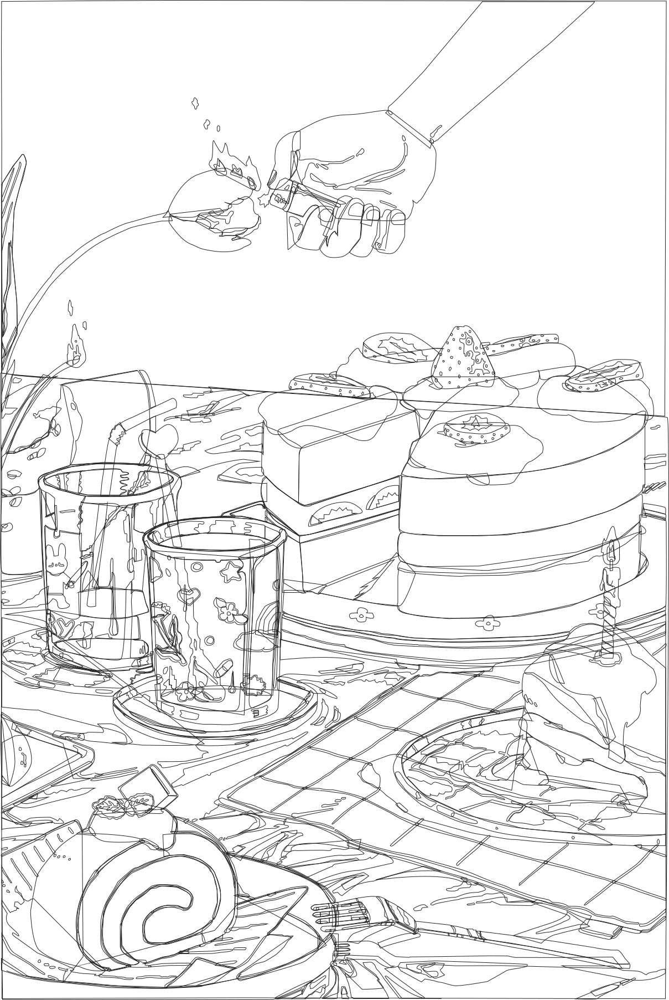
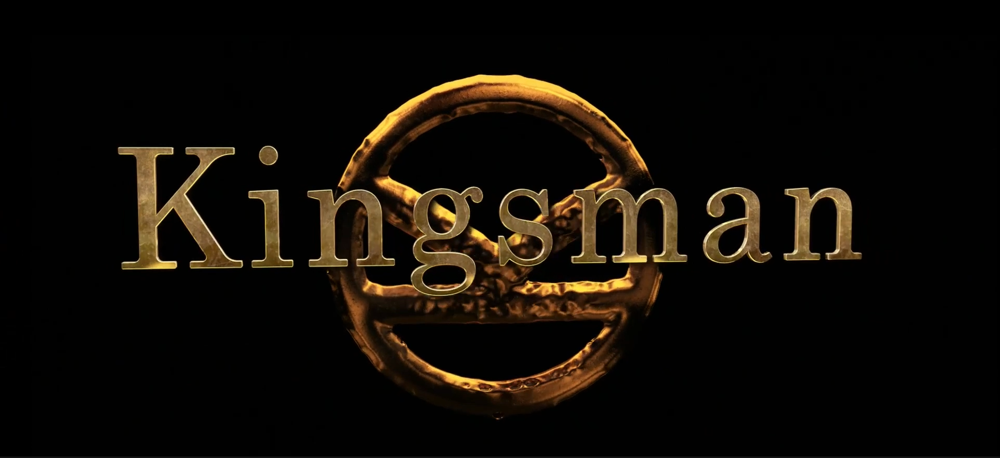
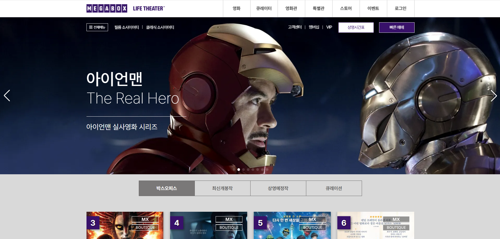
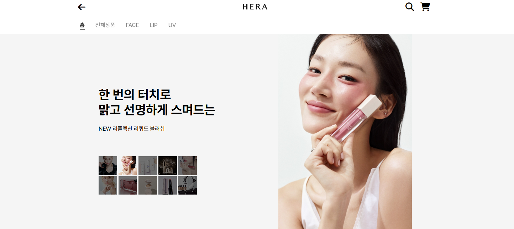
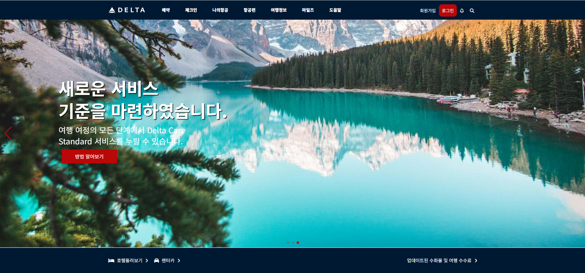
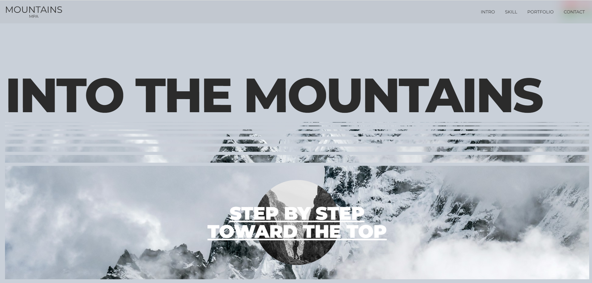
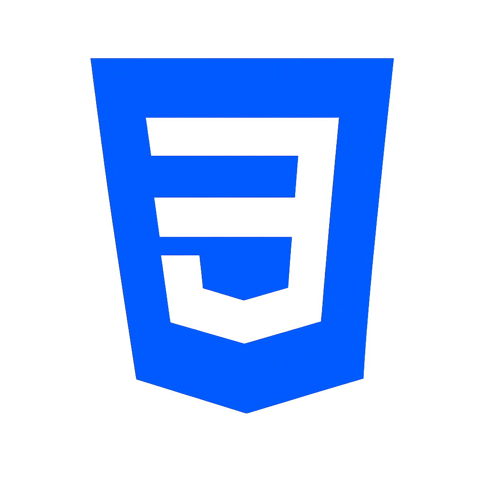

Art Work
색감과 형태를 활용해 다양한 무드와 감성을 표현한 아트워크 디자인 작업물입니다.


Media
컷 편집과 사운드 연출을 통해 장면의 흐름과 몰입감을 표현한 영상 작업물입니다.

팀 프로젝트
영상 팀 프로젝트
7분 분량의 팀 프로젝트 영상입니다.
기획부터 촬영, 편집까지 전 과정에 참여했으며,
장면 흐름과
감정선을 고려한 컷 편집과 색보정을 중심으로 작업했습니다.
팀원들과의 협업을 통해 스토리텔링과 영상 완성도를 높이는 데
집중했습니다.

개인 작업
Kingsman Edit
영화 ‘Kingsman’을 재편집하여 액션 장면의 템포와 긴장감을 새롭게
구성한 개인 작업입니다.
비트에 맞춘 컷 편집과 사운드 싱크를 중심으로 작업했으며,
색보정과 화면 전환을 활용해 영화 특유의 스타일리시한 분위기를
강조했습니다.
Motion Video
타이포그래피와 모션을 활용해 분위기와 리듬감을 표현한 작업물입니다.
Web Design
인터랙션과 반응형 UI를 기반으로 사용자 경험과 분위기를 함께 담아낸 웹 작업물입니다.

팀 프로젝트
HomeStart
오늘의집 스타일을 기반으로 제작한 인테리어 커뮤니티 웹 프로젝트입니다. 사용자가 게시글을 탐색하고 반응할 수 있도록 커뮤니티 게시판, 좋아요/댓글 기능, 상품 페이지, 카테고리 필터링, 반응형 UI를 구현했습니다. 팀 프로젝트에서 주요 페이지 퍼블리싱과 JavaScript 인터랙션 구현을 담당했습니다.
Live Site
개인 작업 · 카피페이지
Movie Site
메가박스 웹사이트의 주요 화면을 참고해 제작한 반응형 카피페이지입니다. 영화 콘텐츠와 배너를 효과적으로 보여줄 수 있도록 화면 구조를 분석하고, 슬라이더와 사용자 인터랙션을 구현하며 퍼블리싱 완성도를 높였습니다.
Live Site
개인 작업 · 카피페이지
HERA Copy
헤라 브랜드관의 화면 구성과 디자인을 분석해 제작한 반응형 카피페이지입니다. 스크롤 방향에 따라 변화하는 헤더와 내비게이션, 메인 배너와 상품 슬라이더를 구현해 원본 사이트의 흐름과 사용성을 재현했습니다.
Live Site
개인 작업
Delta Site
델타항공 사이트를 레퍼런스로 제작한 인터랙션 기반 웹사이트입니다. 항공 브랜드 특유의 차분하고 신뢰감 있는 분위기를 살리기 위해 넓은 비주얼 영역과 스크롤 애니메이션을 활용했으며, 사용자 흐름에 맞춘 섹션 구성과 반응형 레이아웃을 구현했습니다.
Live Site

개인 작업
Mountain Site
자연의 분위기를 담아 제작한 React 기반 랜딩 페이지입니다. 넓은 이미지 비주얼과 스크롤 애니메이션을 중심으로 구성하여 산의 깊이감과 감성적인 무드를 표현했으며, 컴포넌트 구조와 반응형 레이아웃을 고려해 제작했습니다.
Live SiteAbout Me
디자인과 인터랙션을 통해
브랜드의 분위기와 경험을 전달하는
디자이너가 되겠습니다.
- 이름 최희경
- 생년월일 1998.08.10
- 이메일 choiheemin@daum.net
-
교육
웹퍼블리셔
과정 수료 -
자격증
전산세무 2급
전산회계 1급 -
희망직무
웹디자이너
웹퍼블리셔
 Illustrator
Illustrator
 Photoshop
Photoshop
 Premiere Pro
Premiere Pro
 After Effects
After Effects
 HTML
HTML

CSS